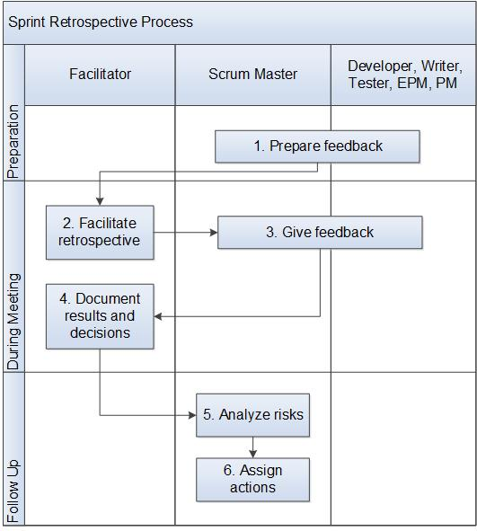

Sprint Retrospective Process¶
This process describes how to do a retrospective at the end of a sprint.
Entry Criteria |
The sprint review is complete. |
Inputs |
None |
Exit Criteria |
Feedback on the sprint has been recorded, changes to make in the next sprint have been decided upon, and actions needed to enact those changes have been assigned. |
Outputs |
|
Activities¶

Step # |
Activity Name |
Description |
|---|---|---|
1 |
Prepare feedback |
All team members prepare feedback for the retrospective. |
2 |
Facilitate retrospective |
The Scrum Master may get a facilitator from outside the team, or facilitate the meeting themselves. |
3 |
Give feedback |
Team members share their feedback. Feedback consists of what worked, what didn’t work and what can be improved. The team discusses what could be changed to make the next sprint better. Revisit changes made in the last sprint and discuss if those changes really helped. The team prioritizes the top changes they want to make. The Facilitator should be ready to ask clarification of issues and to help the team to get to the root problem behind an issue. A brief root cause analysis can be done with a technique like the Five Why’s:
|
4 |
Document results and decisions |
The Facilitator documents the feedback and the decisions about what to change in the next sprint. |
5 |
Analyze risks |
The Scrum Master analyzes the risks in making the team’s changes to the next sprint. |
6 |
Assign actions |
The Scrum Master assigns actions needed to bring about the team’s changes. |
Change Log¶
Date |
Change Request ID |
Version |
Change By |
Description |
05/21/2020 |
N/A |
0.1 |
Shree Vidya Jayaraman |
Initial Draft |
06/22/2020 |
N/A |
0.2 |
Shree Vidya Jayaraman |
Updates based on Roger’s feebdack |